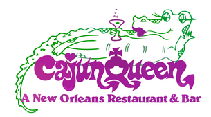
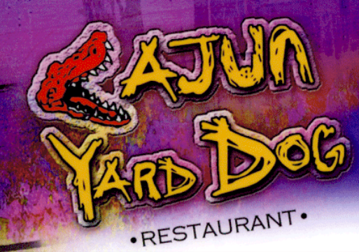

Cajun Queen
Cajun Queen is a Cajun restaurant. It is a good spot for special occasions, and romantic dinners. Some food includes their New Orleans BBQ Shrimp and the Crawfish Scampi.
Cajun Yard Dog
Cajun Yard Dog is a Cajun & Seafood restaurant. It has very high ratings on trip advisor. Some of the food it includes are the blackened salmon and okra.
